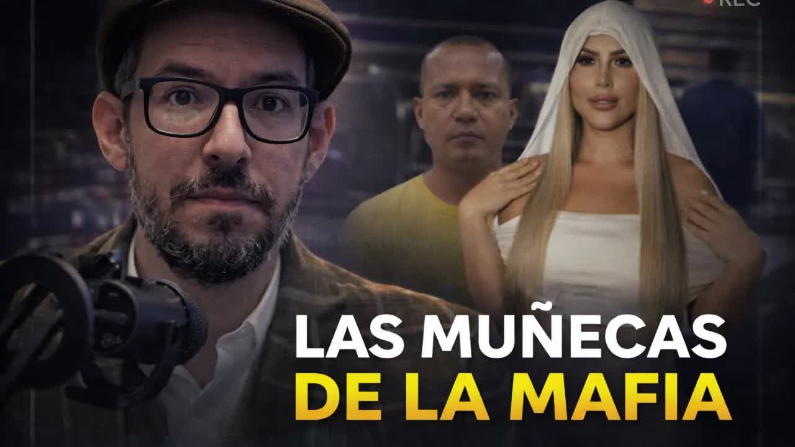
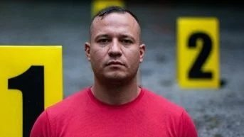
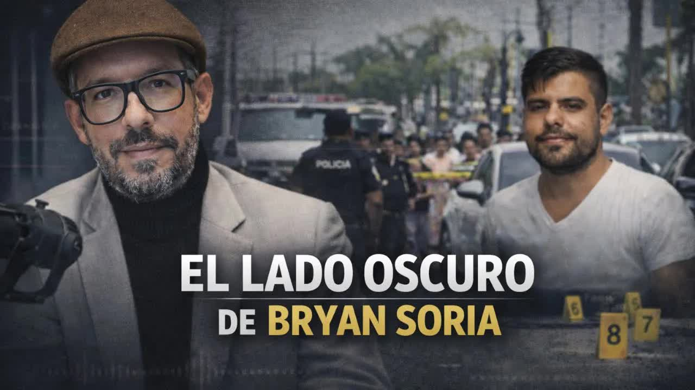
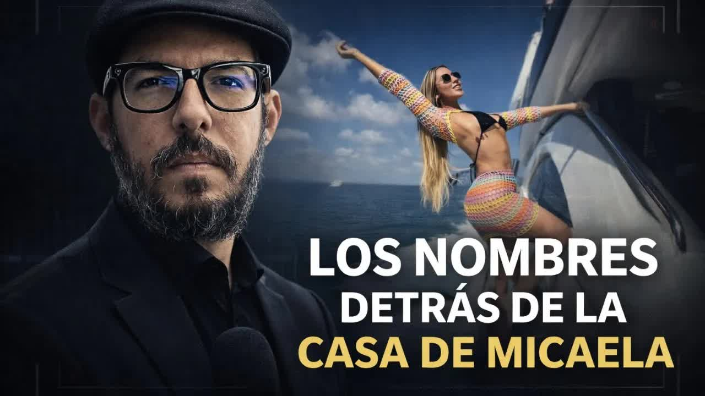
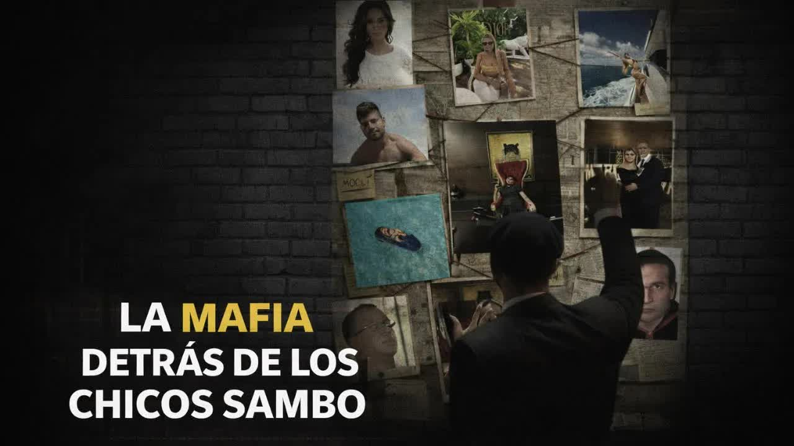
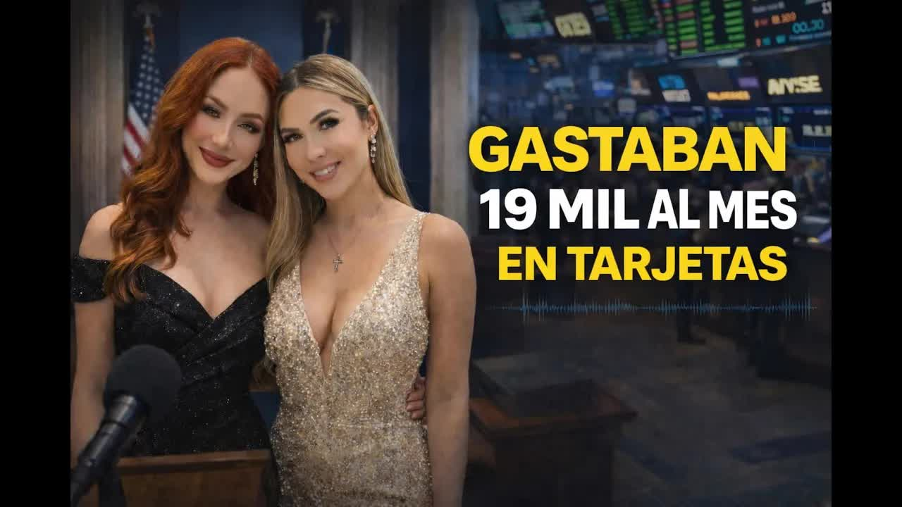

Report 1 · The Mocolí case lifts the veil
The finances of the young women linked to the circle of alias Marino, the Los Lagartos leader killed in Mocolí: Micaela Morales, Wendy Landa, Bryan Soria and Andrés Vélez. Credit cards, trips, handbags and apartments that do not square with any declared income, according to data from the UAFE, the SRI and the banks.

Isla Mocolí is a cluster of gated communities in Samborondón, home to some of Guayaquil's wealthiest people. On the night of January 7, 2026, more than ten armed men dressed as police officers entered Mocolí Golf Club and killed three men on a soccer field. One was Stalin Rolando Olivero Vargas, 40, whom the police had identified as a leader of Los Lagartos and a high-value target for the state for almost two years. They called him Marino because he had been a Navy officer: the Navy expelled him in 2011 over the theft of weapons from a naval outpost; according to his former comrades he was a "paquetero," someone who contaminated containers with drugs. He moved to Los Cubanos, the rival gang of Los Choneros, and when William Poveda, alias Cubano, was killed in La Regional prison in 2019, the organization mutated into Los Lagartos, now Mafia 18, under alias Choclo, based in southern Guayaquil. He went in and out of the country under his own first name and another surname, and traveled to Dubai like someone going to the beach. According to Boscán's sources he lived there and came back for love. Interior Minister John Reimberg maintained that he was killed for trying to defect from Los Lagartos to Los Lobos.
The field had been booked by Andrés Vélez, stepson of former Guayas prefect Carlos Luis Morales, who did not go because of an injury, although his son was there. Vélez supplied the QR codes that let Marino's group in, had a licensed weapon, was investigated for money laundering in 2020 and found innocent, and acknowledged having lent money to Bryan Soria; the next day a company owned by his wife in La Garzota was attacked. Marino was engaged to his stepsister, Micaela Morales Arcos, the former prefect's daughter, and had introduced himself to the family under another name. Micaela was on the field: the screams heard in the video are hers, not Marino's. She left the country on January 8. Vélez tried to leave via Panama and was sent back. One hypothesis is that he was the target; another, that Eduardo Freire, Wendy Landa's boyfriend, survived because he switched vehicles. When it became known who the couple was, social media filled up with photos and videos of Micaela and her circle, among them influencer Wendy Landa. They were dubbed the mafia dolls.

On January 12, Boscán published the first report, seventy-five minutes long, and opened it with a story of his own: the photo he unknowingly took with Landy Párraga, the girlfriend of Leandro Norero, at a conference in Cancún, and how a source persuaded Párraga not to have Luis Eduardo Vivanco killed. Párraga was murdered on April 28, 2024, in a ceviche restaurant in Quevedo after posting a story on Instagram. A mafia doll, Boscán wrote, is a woman whose body was bought by money and whose soul will be collected by violence. The Mocolí house was raided that same afternoon, along with two other properties; the officers knew they were arriving a week late. On January 14, a protected witness who had worked in that house spoke about Bryan Soria, murdered in November 2025, and about Evelyn Rizo, the woman he lived with, a former partner of Dritan Rexhepi, the Albanian mafia boss jailed in Albania; she provided audio recordings in which Soria threatens to kill her. On January 15, the house's paperwork: the gated community's letter with the history of the lot, the five checks Soria used to reserve it, the Banco Pichincha mortgage, the move-in on November 26 and Micaela's arrival on December 13; no one asked for a single document. On the 16th, with Mónica Velásquez, the mafia behind the Sambo kids: the network of companies and front men; Alexandra Burgos, Marino's formal partner, with a variety store that billed 2.3 million in its first year and a Maserati; Cristian del Salto, Soria's travel buddy, who obtained the house without leaving a trace in the chain of title; and Soria's father, a retired military officer and head of security at Dole, the exporter.
I'm not an escort, I'm not a narco-baby, I've never sold my body and I've never been with a drug trafficker.
Wendy Landa, TikTok, January 14, 2026, as reported by Vistazo
On February 2 the second report came out, with Mónica Velásquez. Today we're not going to talk about bullets or nicknames, they said, but about money. For weeks they had requested tax returns, financial histories, Social Security records, vehicles and bank transactions for the people involved, and built their economic profiles. They found the same thing over and over: figures that do not add up.
Leader of Los Lagartos and formal businessman
From an ordinary profile to an inexplicable leap
Zero income, top-executive spending
An economic miracle
Marino was at the same time a formal businessman: shareholder, manager or president of seven companies in private security, cocoa exports, shrimp farming and trade, with state contracts and permits to carry weapons. None paid income tax despite billing millions. He paid himself salaries of 4,000 dollars. In 2023 he declared 191,000 in income and paid 2,000; in 2024, 9,000 in income and 15 dollars in tax. His debt with the financial system was 9,000 dollars, and his properties were worth between 3 and 6 million each. The conclusion is arithmetic: he paid for them in cash.
Until 2021, Bryan Soria had the profile of a guy under thirty earning 900 dollars. In 2022, according to sources, he started working as a contractor for Chugo Portocarrero, a drug trafficker and money launderer convicted in Spain, who posted five million euros in bail and is a fugitive, with three active companies and a contract with the police in 2022; his card spending went from 3,000 to 12,000 a month; in 2024 to 50,000; in 2025 to 100,000, on a 25,000 limit. He moved nearly 1.5 million on cards that year and owed 1.9 million to the banks. He was a partner in armoring and construction companies and, through Sorinter, owner of the house where Marino was going to live with Micaela and of the armored pickup she drove. A Portocarrero company voided invoices worth hundreds of thousands of dollars and replaced them with invoices from a firm in Soria's inner circle: that is how traceability gets broken. Micaela Morales, manager of Black Ship at 800 dollars a month since 2019, declared zero income and spent 17,000 a month on her card, from Banco Guayaquil and before that Produbanco. Wendy Landa, 27, who said in her video that she sold choripanes and hair bows and bills for advertising, 1,200 dollars per TikTok with 45,000 followers, paid about 300 dollars in income tax over three years and spent 18,000 a month. Her boyfriend, Eduardo Freire, won a 607,000-dollar emergency contract with Hidroplayas, the same state company that hired Marino, through a company with 800 dollars in capital; his father and uncle were murdered in Playas.
La Posta's reconstruction based on the economic profiles of February 2, 2026.
The mechanism, Boscán explained, is simple: the kids know the UAFE monitors accounts, so they don't deposit; they spend on their cards and pay them off in cash, injecting the money into the financial system without anyone asking. The report's question was not about them but about the state: who oversees companies that bill millions and pay zero tax, who cross-checks the data when someone on a 600-dollar salary spends 150,000 a year on a card, why the SRI, the banks, the UAFE, the Superintendency of Companies and the public procurement agency do not communicate. The UAFE clarified one point: a Marino company had a security guard contract with Hidroplayas in 2023, before the Noboa government. In 2025 the unit reported 1.577 billion dollars in unusual transactions, almost triple the previous year. According to Boscán, it is reviewing some 90 profiles arising from Mocolí.
The case kept opening up. On March 5 and 6, with Mónica Velásquez, came the answer to the question of the soccer field: almost a dozen sources inside the organization point to Pedro Sánchez, a former police officer, Marino's best friend and number two, who was present in Mocolí, as the traitor. That same January 7, the organization's warehouses were robbed of about ten million in cocaine and cash, and Sánchez claimed the hit. After the January report, the organization dissolved Alexandra Burgos's company and on February 2 created another in her brother's name. That story, with the police officers who reported to Carlos Kada, has its own case file.

Witness 2The responses came in pieces. Landa denied everything on TikTok on January 14. Rosa Torres, an ADN assembly member singled out over a 2023 video in Madrid, said she was in a public place, did not know those people and had taken legal action. An Argentine woman named Micaela Morales was mistaken for the Ecuadorian and told Infobae she feared for her life. On July 16, 2026, the Micaela Morales of Mocolí broke her silence with a statement addressed to Boscán: she denied having said "No, Marino, no" on the night of the crime; denied spending between 15,000 and 21,000 dollars a month; denied owning the house; said her assets come from working since she was 18, from a company founded in 2019 and from a 2020 inheritance, and that her Banco Guayaquil card was activated in July 2025 with a 2,400-dollar limit. She accused him of exposing her to hatred and threats. She left the country for her safety, she said, and faces no proceedings. She told her lawyers she believed she had fallen in love with a businessman.
It is true: she faces none. None of the women named faces formal proceedings. The Attorney General's Office is investigating the triple murder and the UAFE is reviewing the profiles. Marino is dead, Soria is dead, Portocarrero is a fugitive, Sánchez is abroad. The report's figures remain publicly disputed, and the documents that support them, according to the journalists, cannot be shown without exposing the sources.
Updated September 5, 2026
Olivero leaves the Navy over the theft of weapons from a naval outpost.
Alias Cubano is killed in La Regional prison; the gang mutates and Olivero rises.
Soria starts as a contractor for Portocarrero, who that year has a contract with the police.
A Marino company wins a security guard contract with the state company; Freire's company wins another worth 607,000.
Murdered in Quevedo. The story that opens the first report.
On the road to Samborondón, inside a white Porsche. That same day the movers arrive at the Mocolí house.
She moves into house G6 in La Península. Police are already watching the armored cars.
Three dead on the Mocolí Golf Club soccer field. The organization's warehouses are robbed.
The day after the crime, according to the records.
The Mocolí case lifts the veil. That afternoon police raid the house.
I'm not a narco-baby.
About 200 unlicensed weapons.
Assembly member Sergio Peña calls for the UAFE to act; its director clarifies the Hidroplayas contract.
The cards, the debt and the taxes. That day the organization creates its new company.
Pedro Sánchez, the warehouse robbery and the name of the traitor.
Statement to Boscán: she denies the figures and the house.
Leader of Los Lagartos, former Navy officer.
The former prefect's daughter, Marino's fiancée.
Content creator in Morales's circle.
Former police officer, Marino's number two.
Marino's formal partner and manager of his security company.
Director of the UAFE.
"I'm not an escort, I'm not a narco-baby, I've never sold my body and I've never been with a drug trafficker." She said her partner is not a drug trafficker.
She accused Boscán of spreading information that exposed her "to hatred, threats and fear." She denied the phrase "No, Marino, no," the monthly spending attributed to her and the properties.
Its director, José Julio Neira, confirmed a 2023 contract between a company associated with Marino and Hidroplayas, predating the Noboa government.
Minister John Reimberg maintained that Marino was trying to defect from Los Lagartos to Los Lobos and that this led to his murder; the guests got in with QR codes.
The Madrid video is from 2023, she was in a public place and does not know those people. She filed legal action with the Attorney General's Office.
Said he did not know Marino.




Morales. That information has already been confirmed by the police. And I've had the chance to talk to Andrés, to Andrés Vélez, who called me this weekend. Uh, Andrés Vélez confirms to me that he didn't go to the game, but not because he overslept, as my source had told me, but because, he assures me, he had a calf injury and that kept him from going to the kickabout where it all ends up happening…
Read the full transcriptand Alias el Marino. A story that starts out with the video of the murder of Brian Soria, the day Brian Soria was murdered, November 26, 2025. On November 26, 2025, I wasn't on air, I was off the air. Let me mute this, sorry. I wasn't on air because, well, it's public that there were some little problems with my show. And so I saw this news on Twitter, a…
Read the full transcriptHow is it that I have so much information? I get a comment like that two or three times a day on my posts, always in the same tone somewhere between suspicion and fascination, as if information were a trick and not a craft. That's why I've decided to share with you in this diary what a day in my life is like, what a workday is like, any ordinary day, that is, what it's like when this show ends and I go back to the l…
Read the full transcriptI didn't know who Wendy Landa was, or her boyfriend, Eduardo Freire. Not knowing who someone is when their name suddenly lands in my notebook, where I write down what sources tell me. It's something that can be inconvenient. I'm not saying I didn't know them to look cool, to play the intellectual snob who is above influencers and doesn't keep up with that world, but because I'm genuinely an ignorant fool…
Read the full transcriptbank. and patiently, very patiently, receiving the information on each of these profiles, we put together our own economic profiles of the people in this story. Again and again we found the same thing, right? Deep inconsistencies, figures that don't add up and numbers that don't balance. Maybe the story should start, I think, with Stalin Olivero Vargas, alias el marino. Moni, so…
Read the full transcriptTranscripts from each show's automatic captions. They have not been corrected by hand: use them to find a phrase and jump to the exact minute in the video, not as verbatim quotes.
Almost a dozen sources inside the organization point to Pedro Sánchez, Marino's number two, as the one who gave him up. He is abroad.
Micaela Morales denied the figures. Her responses appear in full in this case file.
The model, the number two of Los Lagartos and the cartel's police officers
2025The bunker, the letter, the video call and the plane to Brooklyn
2026The leader of Los Tiguerones explains how he made deals with the government and the police
The card figures come from the second report. The people mentioned have publicly denied the allegations; their responses appear in full in this case file.